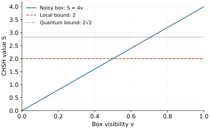

Research question
Why are quantum correlations limited?
Bell inequalities exclude local hidden-variable models, but no-signalling alone allows correlations stronger than quantum theory.
A worked entry into an open research direction · Sources checked 20 October 2026
The question in perspective
Two separated observers choose settings \(x,y\in\{0,1\}\) and record values \(a,b\in\{-1,+1\}\). The question is which joint probabilities \(p(a,b|x,y)\) nature permits. Quantum theory violates some classical constraints without allowing controllable faster-than-light messages. Why does its strength stop where it does?
Three different bounds
A local hidden-variable model, with setting-independent variable \(\lambda\), has the form
\[p(a,b|x,y)=\int d\lambda\,q(\lambda)p(a|x,\lambda)p(b|y,\lambda).\]
For deterministic local responses \(A_0,A_1,B_0,B_1\in\{-1,+1\}\), the combination \(A_0(B_0+B_1)+A_1(B_0-B_1)\) is always \(+2\) or \(-2\): one bracket vanishes and the other is \(\pm2\). Averaging therefore gives the CHSH inequality
\[\begin{aligned}|S|&\leq2,\\S&=E_{00}+E_{01}+E_{10}-E_{11},\\E_{xy}&=\sum_{a,b}ab\,p(a,b|x,y).\end{aligned}\]
Quantum observables obey \(A_x^2=B_y^2=I\). Operators on the two laboratories act on separate tensor factors. For their CHSH operator \(\mathcal B\), direct multiplication gives
\[\mathcal B^2=4I-[A_0,A_1]\otimes[B_0,B_1].\]
Here \([A,B]=AB-BA\). Each commutator has operator norm at most two, so \(\|\mathcal B\|\leq2\sqrt2\). A maximally entangled pair and suitable measurement directions attain this value. This bound follows from the quantum operator structure.
No-signalling requires \(\sum_b p(a,b|x,y)\) to be independent of \(y\), and similarly for the other observer. Let binary outcomes \(u,v\) satisfy \(u\oplus v=xy\), assigning probability one half to each allowed pair. The marginals are uniform, yet \(S=4\) after setting \(a=(-1)^u,b=(-1)^v\). Thus no-signalling alone does not recover the quantum bound.

What is established
The Bell nonlocality review explains the inequalities, quantum violations, and experimental assumptions. A violation rejects the stated local model; it does not independently identify which philosophical account of quantum states is correct.
Information causality supplies an additional operational restriction on accessible information and rules out important stronger-than-quantum correlations. Recovering a familiar bound in one scenario is different from characterizing the full quantum correlation set.
What remains unresolved
The deeper target is a physical explanation of the allowed set across settings, outcomes, and multiple parties. A proposed principle must specify which experiments it constrains and whether it is necessary, sufficient, or both. Numerical agreement for a few inequalities cannot establish a complete reconstruction.
A concrete next investigation
Reproduce: mix the binary box above with uniform noise, \(p_v=v p_{\rm box}+(1-v)/4\). Verify uniform marginals and derive \(S=4v\). The CHSH local bound is exceeded for \(v>1/2\); the quantum CHSH bound is exceeded for \(v>1/\sqrt2\).
Check: explicitly build qubit measurements attaining \(2\sqrt2\), rather than assuming every no-signalling table is realizable.
Extend: compare a chosen information principle with quantum realizability in a specified larger scenario. A new separation requires either an explicit admissible counterexample or a proof with stated dimension and modelling assumptions.
Selected references
- Bell nonlocality
Nicolas Brunner et al.. 2013. Review
Introduces Bell correlations and their role in the foundations and applications of quantum information.
- Information Causality as a Physical Principle
Marcin Pawłowski et al.. 2009. Research paper
An operational restriction on accessible information beyond no-signalling.
Years refer to first arXiv submission. Publication details are available in the linked records.